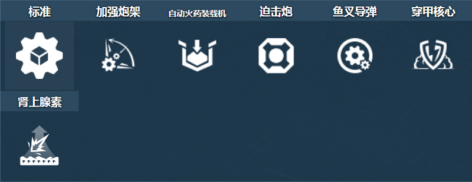
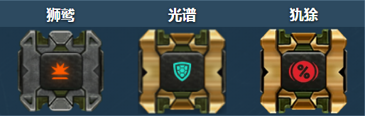
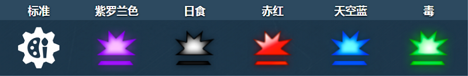
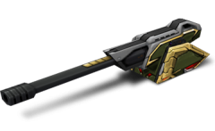

概括
马格南可能是游戏中最难掌握的炮塔之一，但尽管它的控制很硬，但它显然拥有团队中最重要的炮塔的称号。
它可以一口气干掉一群人，甚至不可见，静静地坐在自己基地的一堵小墙后面。
这个炮塔虽然需要真正的技巧来使用和掌握，但能够完全关闭整个敌方队伍。
然而，在发射功率、射击角度和左右瞄准挑战之间，在需要的地方进行射击对于普通加油机来说可能是一项相当艰巨的任务。
车库中的描述
具有远程的火炮发射器。在弹道上发射强大的爆炸弹。
艺术坦克建造的真正代表作。最大口径，可装在坦克车体上。
我们所能找到的最具破坏性的高爆弹。
最长的枪管，最大的桶刹车。最强后坐力，可以翻转轻型坦克。
这个炮塔中的每一块都在尖叫着“最好的”。
甚至它的瞄准系统也是最……难的。
标准炮塔和其他一些增强装置通过取消高度变化机制来处理大口径。重型子弹以弧线飞向目标，使其难以瞄准。
但是，只要有足够的技能，您就可以在任何掩体后面和任何距离击中敌人。
在最激烈的情况下，您可以将枪管笔直向上瞄准，开火
装备改造

防御模块

射击效果

皮肤
马格南标准

马格南 XT